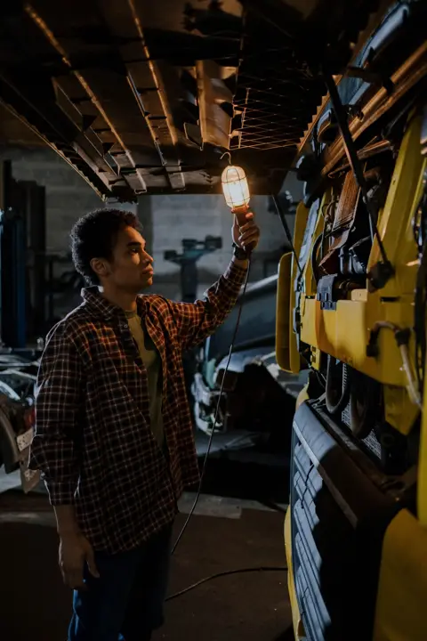
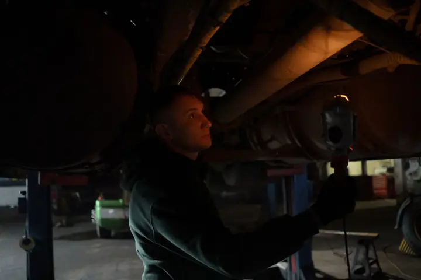
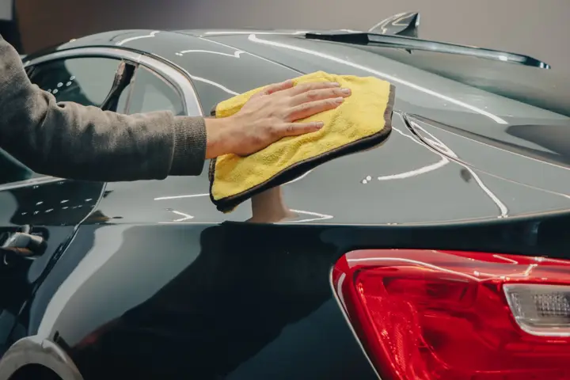
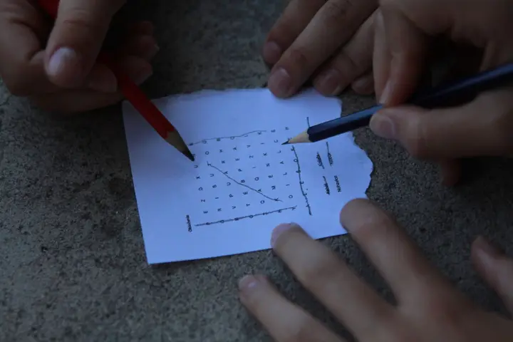

Christmas Gifts for Dad UK: Practical Presents Dads Love
Ad: As an Amazon Associate I earn from qualifying purchases. Links on this page are affiliate links, so I may earn a commission if you buy, at no extra cost to you. More info.
Dads are famously hard to buy for. These are practical, “oh that’s handy” presents for the garage, the car and the armchair.
1. Hands-free neck reading light
A neck light keeps both hands free for reading in bed, fixing things under the sink or rummaging in the shed. One of the most useful “I didn’t know I needed this” gifts.
View on Amazon UK
Lifestyle photo (not the product): Pexels
2. Rechargeable LED work light
A rechargeable work light that’s brighter and handier than a phone torch. Ideal for the DIY dad or anyone who tinkers with the car.
View on Amazon UK
Lifestyle photo (not the product): Pexels
3. Magnetic LED work light
The magnetic base sticks to the bonnet, a radiator or the fridge, so the light points exactly where he’s working. Great for mechanics and home-improvement types.
View on Amazon UK
Lifestyle photo (not the product): Pexels
4. CarPlan Demon car care gift pack
A well-known British car care brand in a ready-wrapped gift pack. Perfect for the dad who washes his car every Sunday.
View on Amazon UK5. Faraday key pouch (2 pack)
Faraday pouches help block keyless-entry relay theft, which is a real worry for UK drivers. A thoughtful gift that shows you care about his car (and him).
View on Amazon UK
Lifestyle photo (not the product): Pexels
6. Murdoku murder-mystery logic puzzles
Logic puzzles with a murder-mystery twist, a nice change from the crossword. Brilliant for the dad who loves Sudoku or a good detective drama.
View on Amazon UKLifestyle photo (not the product): Pexels
7. Car cleaning gift set
A complete wash kit means no excuse for a grubby car. Suits new drivers too, but dads with a pride-and-joy motor will appreciate it most.
View on Amazon UK8. Magnetic fidget pen
Part pen, part desk toy, and surprisingly addictive. A fun small gift for dads who work at a desk.
View on Amazon UK